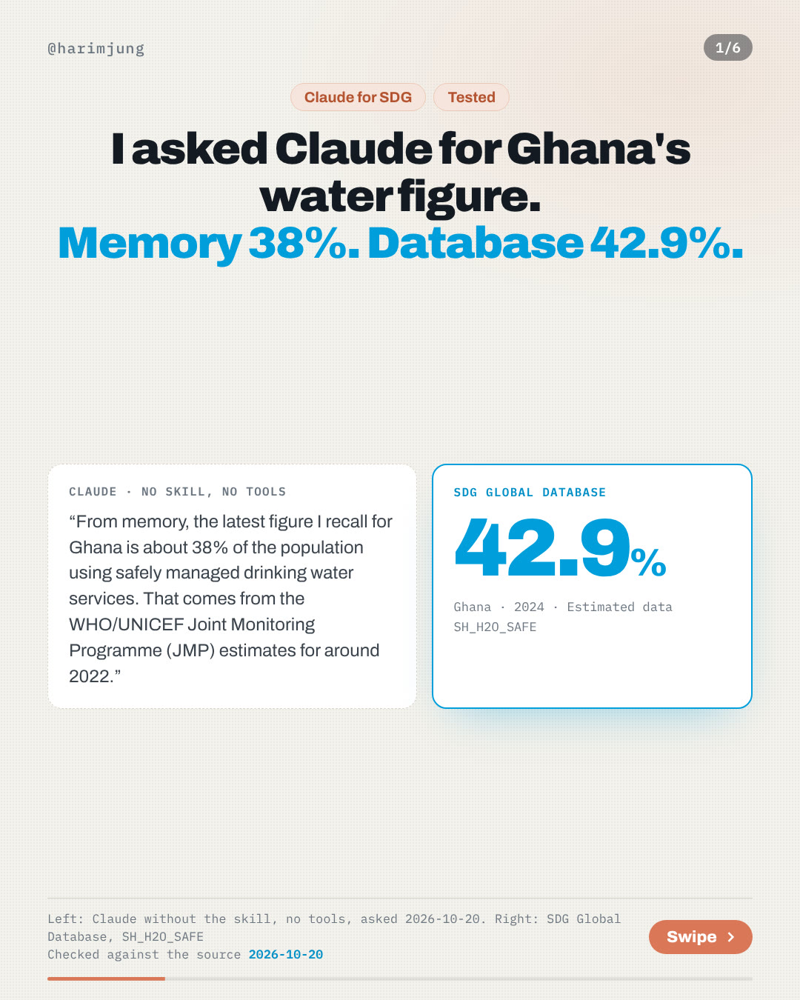
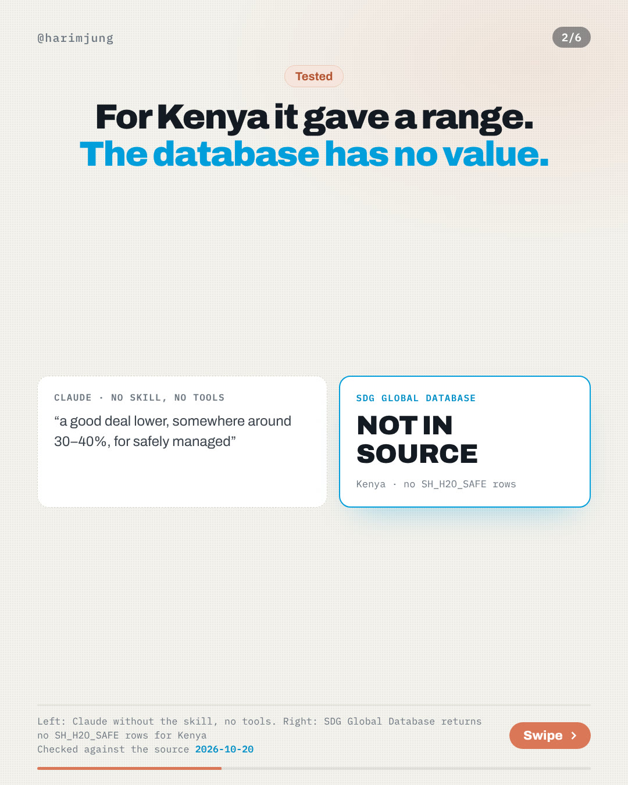
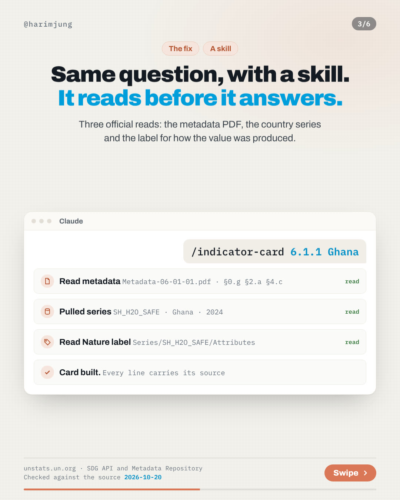
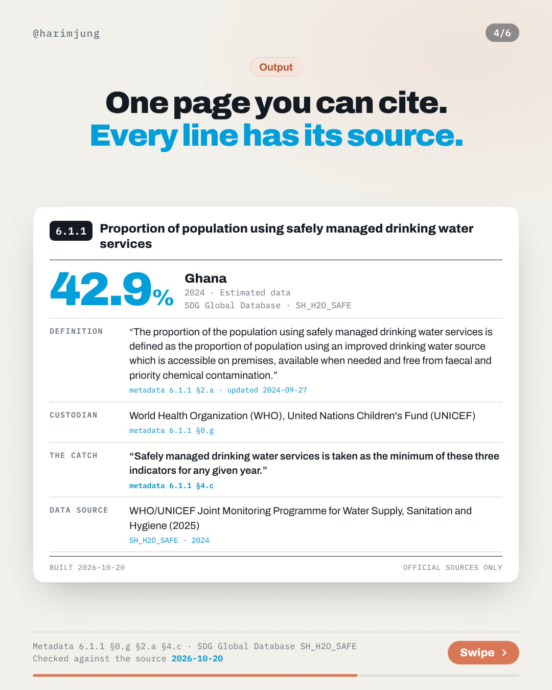
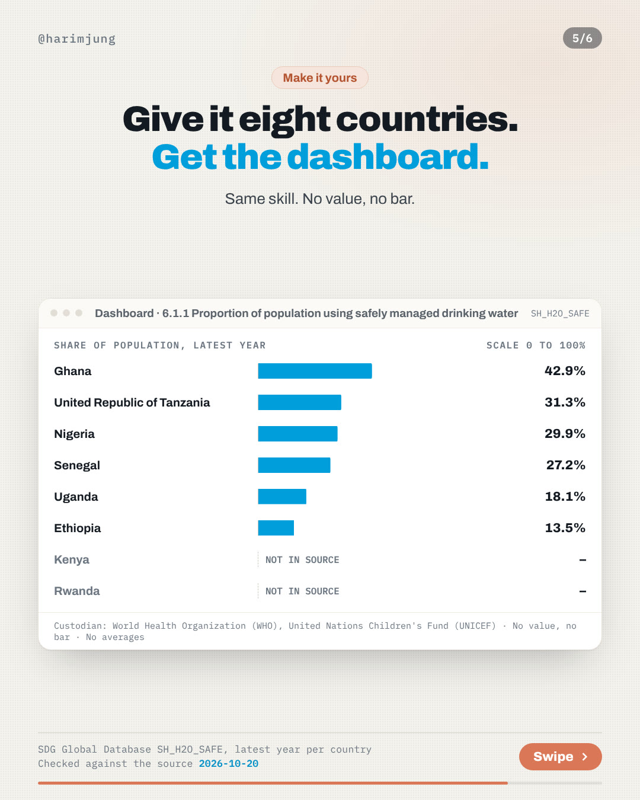
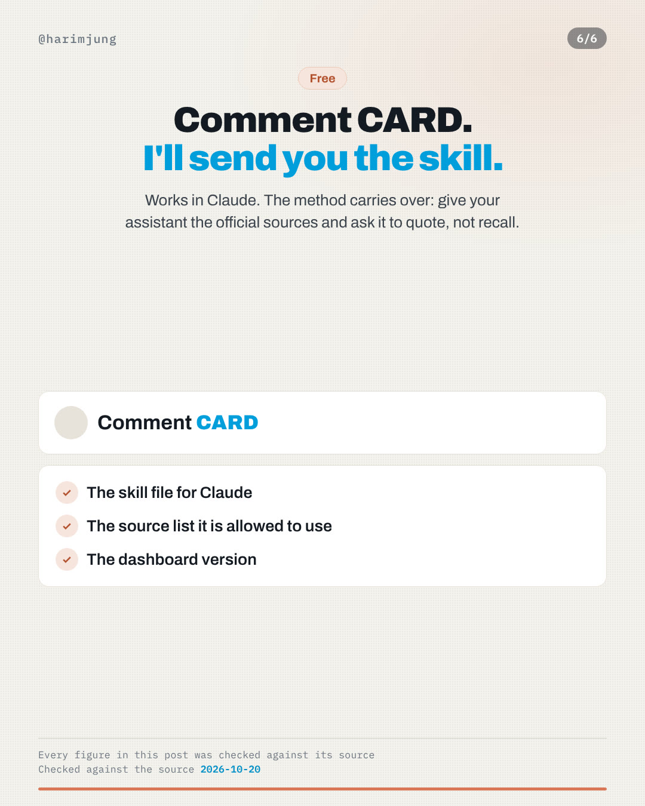

I asked Claude for Ghana's water figure. Memory 38%. Database 42.9%.






One chart, and a vertical cut
The eight-country chart as a single image and the same slides at full phone height. Free to repost with the source line.

What Claude said with no tools and no skill
Same three questions, asked once each. It got the method right and said so plainly. The two values came from memory, and it told us to check the source.
What is the latest SDG indicator 6.1.1 value for Ghana? Answer in at most three sentences.
From memory, the latest figure I recall for Ghana is about 38% of the population using safely managed drinking water services. That comes from the WHO/UNICEF Joint Monitoring Programme (JMP) estimates for around 2022. About 87% of Ghanaians have at least basic drinking water. I can't confirm whether a newer JMP update has been released, so check the JMP database or the UN SDG Global Database for the current number.
Database: 42.9% (2024)How is the SDG 6.1.1 'safely managed drinking water services' figure built from its three service criteria? Answer in at most three sentences.
The JMP's "safely managed" drinking water figure is the share of the population using an improved source that meets all three criteria at once: it is located on premises, water is available when needed, and it is free from faecal (E. coli) and priority chemical contamination (arsenic and fluoride). In practice it's built as a "ladder" in which a household counts as safely managed only if it passes every criterion. The overall figure is therefore limited by the weakest criterion, and in data-sparse countries it is often estimated from whichever of the three have data, since water quality data are the scarcest.
Matches metadata 6.1.1 §4.c: the lowest of the threeWhat is the latest SDG indicator 6.1.1 value for Kenya? Answer in at most three sentences.
I can't give a figure I'm confident in without checking the source. SDG 6.1.1 is the share of people using safely managed drinking water services, and the WHO/UNICEF Joint Monitoring Programme (JMP) publishes it. My recollection is that Kenya's recent estimate is roughly 60–65% for at least basic drinking water, and a good deal lower, somewhere around 30–40%, for safely managed. For the exact latest value, check the JMP database (washdata.org) or the UN SDG Global Database. I can look it up if you'd like.
Database: no country value for KenyaWhat is the latest SDG indicator 6.1.1 value for Ghana? Answer in at most three sentences.
Ghana's latest SDG 6.1.1 value is **42.94%** of the population using safely managed drinking water services. It is for 2024, all areas, and its Nature attribute is Estimated. The series is `SH_H2O_SAFE` in the SDG Global Database, and the source is the WHO/UNICEF Joint Monitoring Programme (2025). I did not open the metadata PDF, so I haven't checked the definition, custodian or methodological catch. This is the data line of the card only. The only other series code I could name would be an unconfirmed guess, because I didn't pull the Indicator/List.
Database: 42.9% (2024)What is the latest SDG indicator 6.1.1 value for Kenya? Answer in at most three sentences.
**NOT IN SOURCE.** The SDG Global Database (SDG API, `Series/Data`, queried 21 Oct 2026) has no Kenya (M49 404) row for `SH_H2O_SAFE`, the safely managed drinking water series for 6.1.1, so I'm not giving a figure. The API's `Indicator/List` also tags `SH_SAN_HNDWSH` (basic handwashing facilities) to 6.1.1, and Kenya has 42 rows there. That is a different measure, so it doesn't fill the gap. I didn't open the metadata PDF, so the definition, custodian and "catch" lines of the card are not included.
Database: no country value for KenyaSame skill, eight countries
Proportion of population using safely managed drinking water services, latest year in the SDG Global Database (SH_H2O_SAFE). No value, no bar. Nothing is averaged.
| Country | Value | Year | Nature |
|---|---|---|---|
| Ghana | 42.9% | 2024 | Estimated data |
| United Republic of Tanzania | 31.3% | 2024 | Estimated data |
| Nigeria | 29.9% | 2024 | Estimated data |
| Senegal | 27.2% | 2024 | Estimated data |
| Uganda | 18.1% | 2024 | Estimated data |
| Ethiopia | 13.5% | 2024 | Estimated data |
| Kenya | NOT IN SOURCE | – | – |
| Rwanda | NOT IN SOURCE | – | – |
Custodian: World Health Organization (WHO), United Nations Children's Fund (UNICEF). Scale 0 to 100%.
Where every number comes from
- Values: UN SDG Global Database, series SH_H2O_SAFE, EG_ACS_ELEC, SH_STA_MORT, read through unstats.un.org/sdgapi
- Definition, custodian and method: SDG Metadata Repository, indicator 6.1.1, last updated 2024-09-27
- Definition, custodian and method: SDG Metadata Repository, indicator 7.1.1, last updated 2026-03-27
- Definition, custodian and method: SDG Metadata Repository, indicator 3.1.1, last updated 2025-11-04
- Value labels (Estimated data, Modeled data): the series attribute list in the same API
- Claude's answers: recorded word for word on 2026-10-20. The no-skill runs had no tools and no skill. The with-skill run had the btr-checklist skill and could read web pages. All of them are in the test log
Run the same test on your own indicator
The skill behind this week is free. Download it and use it the same day. No comment needed.
Get next week's test
A method post every Tuesday and one chart from UN data every Thursday. Free, and you can leave any time.